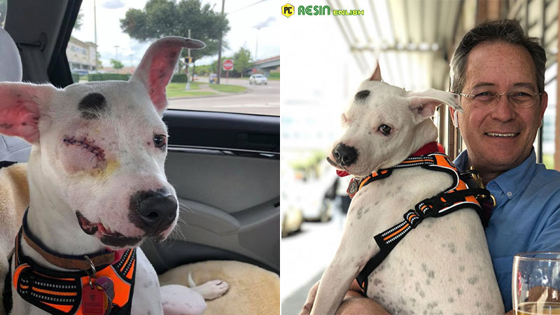

The One-Eyed Dog Who Was Abused Is Now Living A Happy Life

Many cases of abuse are all around us, and the most vulnerable are often the ones who suffer, as was the case with Bubbles, a bull terrier puppy who was brutally tortured. A soulless guy shot this small child, causing her to lose an eye and a portion of her jaw, as well as beating her with a hammer.

Bubbles was taken in by a dog shelter in Houston, Texas, when she was just 6 months old.
This caused him to lose his right eye and also killed his jaw and inner ear.
One-eyed dog because of abuse is now happy.

In September 2017, Kilyn Horton Blanchard and her husband, Ike Blanchard, proprietors of a mobile dog grooming firm, helped at the shelter and met Bubbles, who was severely damaged when he arrived.
Kilyn told Metro :
“His right jaw joint was fractured, and the broken bones had healed into a calcified mass. Bubbles’ mouth could only open a half-inch. It is unexpected.

Kilyn Horton and her husband ultimately adopted Bubbles. She stated that she knew she should take the small puppy home as soon as she saw her.
Kilyn commented,
” She was resting in her kennel when we opened it, but the immediately we did, she sprang out and put her head in my breast, begging to be loved.”

Bubbles, according to Kilyn, never lets his infirmities stop him from loving his life, and attempts to persuade people to adopt special-needs dogs.
She said,
“There is a lot of cruelty in the world, but we want people to understand that just because they see an injured or abused shelter dog doesn’t mean it’s damaged; sometimes they’re just afraid; all they need is a little love, and they have a lot to offer back.

Bubbles is more than ready to love and live a joyful life, free of the pain of her past, after four years and many surgery to remove the bullet that was still left in her body.
Her family claims she adores children and is both fun and kind with them.
Bubbles is now attending many events with her family in order to socialize and talk about her background, as well as to raise awareness about animal abuse, which, according to Kilyn, is all too frequent.

She said,
“Right now, we’re trying to get her to work with various animal rescue organizations to raise awareness about animal cruelty, including visiting to schools and talking to kids about how to properly care for animals. We want to hear your experience, but we want to focus on your future and show others that, while your past may have been difficult, your future does not have to be.

We also want to promote charity and respect to others.”